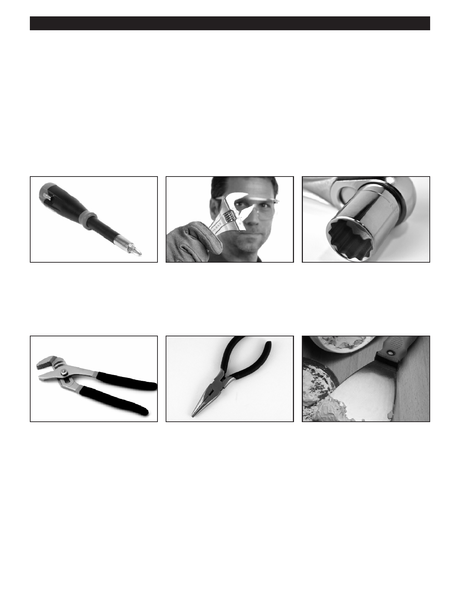

PA RT I C I PA N T R E S O U R C E G U I D E
Key Tools for Appliance Repairs
You can complete many appliance maintenance and repair tasks with the basic hand
tools you probably already have.
Adding a few specialty tools, however, will prepare you for almost anything you may
encounter.
The Basic Hand Tools
Slotted and Phillips insulated
An adjustable wrench has a
A ratchet wrench has
screwdrivers can help you with
movable jaw that lets you fit the
interchangeable sockets to fit
many appliance repair tasks.
wrench to many sizes of nuts
various sizes of nuts and bolts.
and bolts.
You use it to tighten and loosen
these nuts and bolts.
A tongue and groove pliers has
An insulated needlenose pliers
A putty knife will help you scrape
a movable handle that lets you
has thin jaws for grabbing small
away old putty, caulk, or wax from
adjust the jaws for maximum
things.
fixtures.
gripping strength.
Note: The only time a putty knife or
scraper is needed, it is to open the
front panel on a dryer.
9